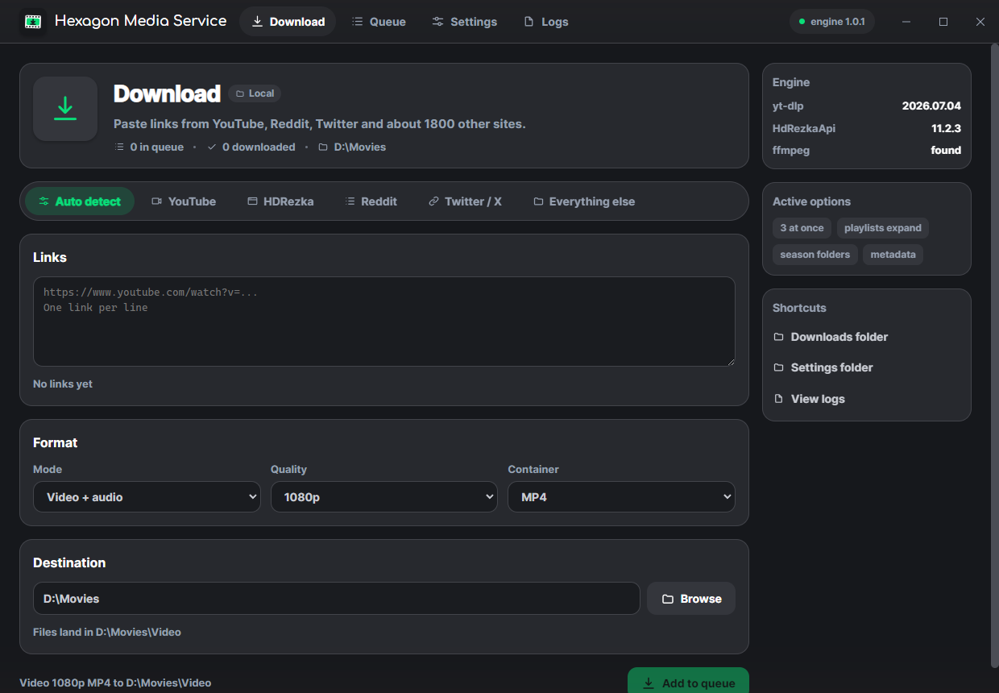
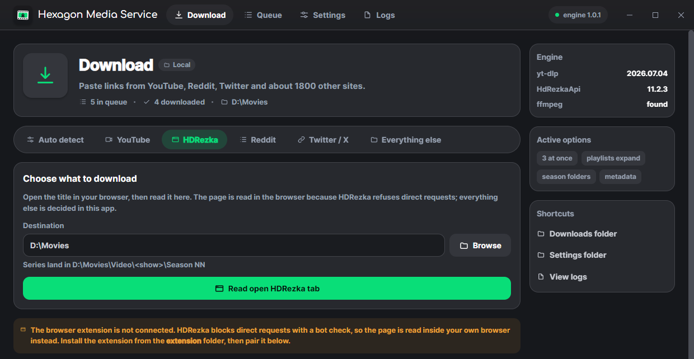
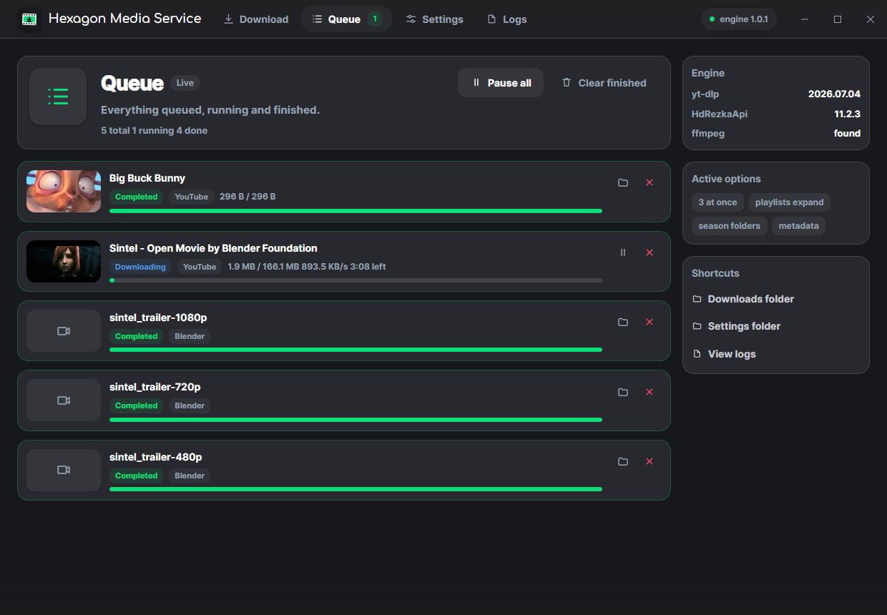
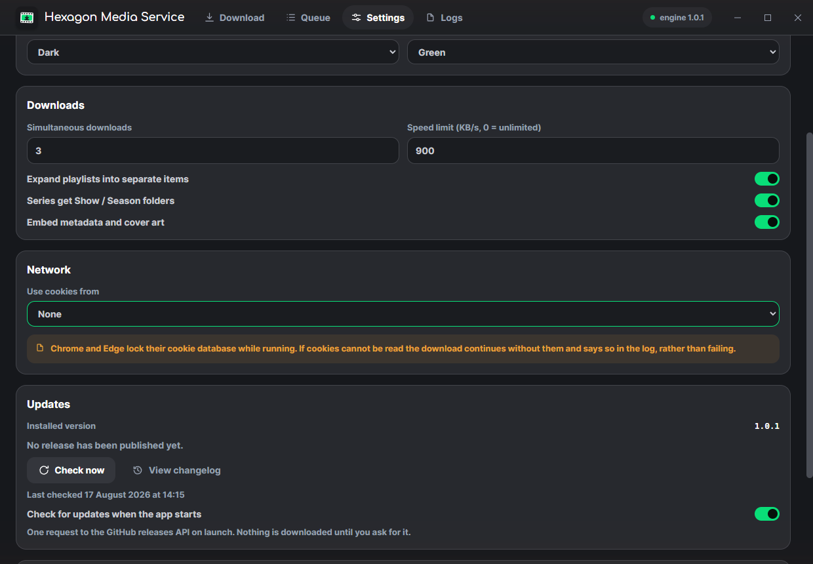

Many sources
Anything yt-dlp supports, plus a dedicated HDRezka resolver. Paste a link into Auto and the right handler picks it up by itself.
Windows desktop app
YouTube, HDRezka, Reddit, Twitter and about 1800 other sites, filed and tagged the way you want them. Everything runs on your machine: no account, no telemetry, nothing uploaded.

Anything yt-dlp supports, plus a dedicated HDRezka resolver. Paste a link into Auto and the right handler picks it up by itself.
Video with audio, audio only or video only. 360p to 4K. MP4, MKV or WEBM; MP3, M4A, Opus, FLAC, WAV or Vorbis at a chosen bitrate.
Concurrent downloads with pause, resume and retry, live speed and ETA, and a per-item error that says what actually went wrong.
Paste many links at once, or drop in a playlist or channel and have every entry expand into its own queue item.
Title, artist, album, date, chapters, subtitles and cover art are embedded into the finished file, with the source URL written on top.
A season lands as Show / Season 06 / Show - S06E20.mp4, and the exact path
is shown before anything is queued.
HDRezka
Load a title, then pick the translation, the quality and any mix of seasons and episodes:
select all, a single season, or a range like 1-10 or 3,5,7.
HDRezka refuses direct requests with a bot check, so the page is read inside your own browser through a small extension. Everything after that is decided in the app, and the queue narrates every stage: downloading, waiting for the file, moving, tagging.

Queue
Engine downloads and browser transfers appear side by side, each row patched in place so a running download never redraws the page.
Files are moved with the same Win32 call Explorer uses, one at a time, and a transfer is only filed once its size has settled and the byte count matches. A truncated file is refused rather than saved.

Private by construction
There is no server side and no account. The only outbound requests are the ones you ask for: the sites you download from, and one check against the GitHub releases API when the app starts, which you can switch off.
Updates are downloaded on request and verified against the checksum published beside the
installer. Settings, history and logs stay in
%APPDATA%\HexagonMediaService.

The download engine is bundled, so Python is not needed. ffmpeg ships with it too.